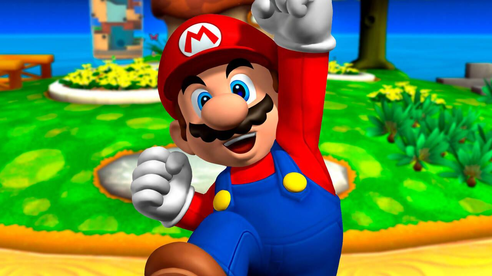
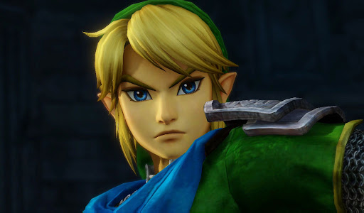
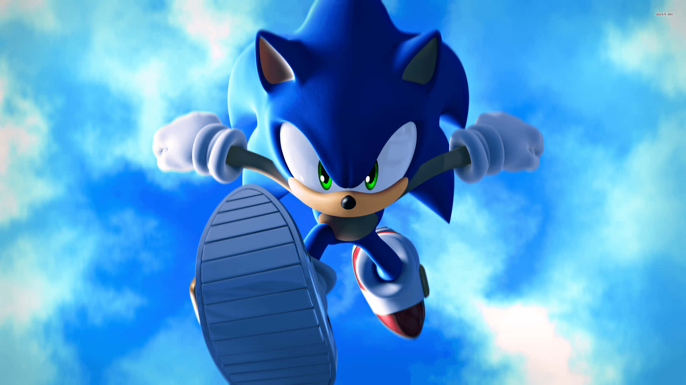
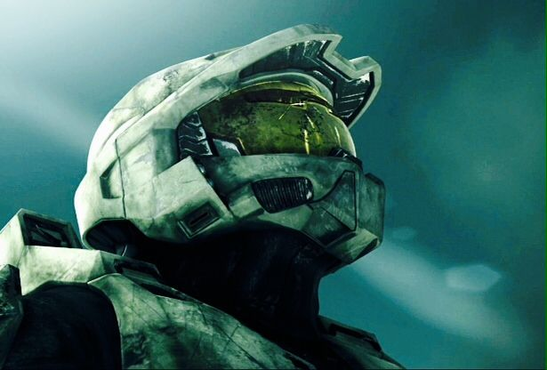

Recorrido Virtual de Personajes Icónicos de Videojuegos
Aplicación Multimedia Interactiva - Fase 2
Juan Camilo Dehoyos Alvarez
Mario

Biografía: Mario es uno de los personajes más emblemáticos de la historia de los videojuegos. Fue creado por el diseñador japonés Shigeru Miyamoto y apareció por primera vez en el videojuego Donkey Kong en 1981. Inicialmente el personaje era un carpintero, pero posteriormente Nintendo decidió convertirlo en un plomero italiano que vive en el Reino Champiñón.
Impacto en los videojuegos La franquicia de Super Mario Bros. revolucionó los videojuegos de plataformas y ayudó a consolidar el éxito de Nintendo a nivel mundial. Mario se ha convertido en una de las figuras más reconocibles de la cultura gamer.
Caracteristicas: Mario es reconocido por su gorra roja, su bigote característico y su capacidad para saltar grandes distancias. En muchos juegos puede utilizar distintos power-ups que le permiten adquirir habilidades especiales, como crecer de tamaño, lanzar bolas de fuego o volverse temporalmente invencible.
Mario tiene bigote porque en los videojuegos antiguos era difícil dibujar bien la boca con pocos píxeles.
El bigote ayudaba a definir mejor su cara en la pantalla.
Link - The Legend of Zelda

Biografía: Link es el protagonista de la serie de videojuegos The Legend of Zelda, creada por Shigeru Miyamoto y Takashi Tezuka. Su primera aparición fue en 1986 y desde entonces ha protagonizado numerosas aventuras en el reino ficticio de Hyrule.
Impacto en los videojuegos La saga The Legend of Zelda: Ocarina of Time es considerada uno de los videojuegos más influyentes de todos los tiempos, ya que introdujo mecánicas innovadoras de exploración y narrativa dentro de los videojuegos de aventura.
Caracteristicas: Link es conocido por su valentía y por su habilidad en el combate con espada y escudo. A lo largo de los juegos debe resolver acertijos, explorar mazmorras y enfrentarse a enemigos para salvar al reino y proteger a la princesa Zelda.
La saga se inspiró en experiencias de exploración en la infancia.
Sonic

Biografía: Sonic es el protagonista de la serie de videojuegos Sonic the Hedgehog, desarrollada por Sega. El personaje fue creado por Yuji Naka, Naoto Ohshima y Hirokazu Yasuhara como parte de un proyecto para crear una mascota que pudiera competir con la popularidad de Mario.
Impacto en los videojuegos:La franquicia de Sonic se convirtió en uno de los mayores éxitos de Sega durante los años noventa. El personaje se transformó en el símbolo principal de la compañía y protagonizó numerosos juegos, series animadas y productos derivados que ampliaron su presencia dentro de la cultura popular.
Caracteristicas: Sonic es un erizo azul con la capacidad de correr a velocidades supersónicas. Su habilidad principal es la velocidad, lo que permite a los jugadores recorrer niveles rápidamente mientras esquivan obstáculos y derrotan enemigos. También es conocido por su personalidad confiada, su actitud relajada y su fuerte sentido de la justicia.
Sonic fue creado como competencia directa de Mario.
Master Chief

Biografía: Master Chief es el protagonista principal de la saga Halo: Combat Evolved, desarrollada por Bungie y posteriormente por 343 Industries. Su nombre real es John-117 y es un supersoldado perteneciente al programa Spartan.
Impacto en los videojuegos: La saga Halo fue uno de los títulos más importantes para la consola Microsoft Xbox y ayudó a popularizar los videojuegos de disparos en primera persona en consolas.
Características: Master Chief es un guerrero altamente entrenado que utiliza una avanzada armadura tecnológica conocida como Mjolnir. Esta armadura le proporciona mayor fuerza, velocidad y resistencia en combate. A lo largo de los juegos combate contra diferentes amenazas alienígenas que ponen en peligro a la humanidad.
Su nombre real es John-117.
Lara Croft
Biografía: Lara Croft es la protagonista de la serie de videojuegos Tomb Raider, desarrollada originalmente por Core Design y publicada por Eidos Interactive. El personaje fue creado por Toby Gard y se convirtió rápidamente en una de las figuras más reconocidas del mundo de los videojuegos.
Impacto en los videojuegos: La serie Tomb Raider fue una de las pioneras en los juegos de aventura en tres dimensiones y contribuyó a popularizar el género de exploración y resolución de puzzles. Lara Croft se convirtió en uno de los primeros personajes femeninos protagonistas en videojuegos con gran reconocimiento internacional.
Características: Lara Croft es una arqueóloga y aventurera conocida por su inteligencia, habilidades físicas y capacidad para resolver enigmas complejos. A lo largo de sus aventuras explora ruinas antiguas, templos y lugares misteriosos alrededor del mundo mientras busca artefactos históricos de gran valor.
Es uno de los primeros íconos femeninos fuertes en los videojuegos.
Cuestionario Interactivo
Progreso: 0 / 8
1. Mario originalmente se llamaba Jumpman.
2. Sonic fue creado por Nintendo.
3. Master Chief pertenece a la saga Halo.
4. Lara Croft es protagonista de Tomb Raider.
5. Link es el personaje principal de The Legend of Zelda.